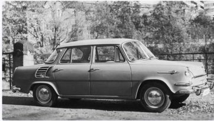

Legendárne ľudové vozítko Škoda 1000 MB sa na trhu objavila v roku 1964. Tento štvorvalec mal objem motora len 988 cm3 a výkon 45 koní. Na dlhé obdobie embéčky zaplavili naše cesty a stali sa jedným z najtrvalejších účastníkov cestnej premávky. Počas výroby sa dočkali tiež viacerých modifikácií